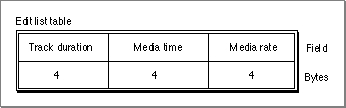

Edit List Atoms
You can use the edit list atom, also shown in Figure 4-15, to tell QuickTime how to map from a time in a movie to a time in a media, and ultimately to media data. This information is in the form of an edit list table, shown in Figure 4-16.You define an edit list atom by specifying the following elements:
Figure 4-16 The layout of an edit list table
- Size. A long integer that specifies the number of bytes in the edit list atom.
- Type. A long integer that specifies the type of the edit list data (defined by the
'elst'atom type).- Version. A 1-byte specification of the version of this edit list atom.
- Flags. Three bytes of space for future flags to be associated with this edit list atom.
- Number of entries. The number of entries in the edit list atom.
- Edit list table. Each entry in the edit list table (shown in Figure 4-16) describes a single edit and contains a track duration field, a media time field, and a media rate field.

You create an edit list table by specifying these elements:
- Track duration. The duration of this edit segment in movie time scale units.
- Media time. The starting time within the media of this edit segment (in media time scale units). If -1, it is an empty edit.
- Media rate. A fixed number that specifies the relative rate at which to play the media for this edit segment.